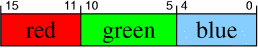
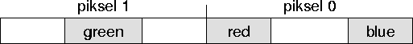
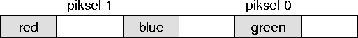

Dodawanie z nasyceniem
| Autor: | Wojciech Muła |
|---|---|
| Dodany: | 11.02.2002 |
| Aktualizacja: | 29.06.2007 |
Contents
Wprowadzenie
Operacje z nasyceniem (ang. saturated) odgrywają dużą rolę nie tylko w grafice komputerowej, ale generalnie w przetwarzaniu sygnałów. Standardowe jednostki ALU działają w trybie wrap-around, tzn. że zapisywane jest n najmłodszych bitów wyniku. Jeśli wynik jakiejś operacji ma znaczące bity na pozycji powyżej n to są one ucinane, czego efektem jest przekłamanie rezultatu (a także pośrednio operacja and, co czasem jest wykorzystywane). Zobaczmy typowy przykład.
mov al, 0xfa ; 0xfa + 0x30 = 0x12a
add al, 0x30 ; ale al ma szerokość 8 bitów
; al = 0x12a & 0xff = 0x2a
Takie zdarzenie jest nazywane przekroczeniem zakresu i niektóre kompilatory potrafią o tym poinformować.
W x86 znacznik CF (ang. carry flag) informuje o przekroczeniu zakresu podczas dodawania lub odejmowania (jest do niego przepisywany najstarszy bit wyniku), natomiast znacznik OF (ang. overflow flag) jest ustawiany przez operacje mnożenia i dzielenia.
Operacje z nasyceniem niejako maskują przekroczenie zakresu — jeśli wystąpi owo przekroczenie to wynikowi przypisywana jest minimalna bądź maksymalna wartość jaką może przechować dane słowo binarne.
c = a działanie b
if c > max:
c = max
elif c < min:
c = min
Dla słów bez znaku min=0, maksimum natomiast to słowo gdzie wszystkie bity są ustawione, np. dla bajtu max=255 = 0b11111111.
Poniżej przykład: do wartości pikseli dodano 100 (typowy efekt rozjaśnienia). W przypadku obrazka z lewej strony została zastosowana typowa arytmetyka modulo, natomiast wartości pikseli obrazka ze strony prawej były dodawane z nasyceniem. Dostrzega szanowny Czytelnik różnicę?

W artykule przedstawię sposoby dodawania pikseli 15bpp, 16bpp oraz 24/32bpp.
Dodawanie i odejmowanie z nasyceniem pikseli 24/32bpp
Poszczególne składowe pikseli w tych formatach mają szerokość 8 bitów, co jest ogromnym ułatwieniem, bowiem zarówno rozkazy x86, jak i MMX mogą na słowach o tej szerokości operować.
MMX — dodawanie i odejmowanie
Wśród rozkazów MMX/SSE są dwa które wspierają bezpośrednio te operacje:
- paddusb — dodawanie z nasyceniem bajtów (bez znaku)
- psubusb — odejmowanie z nasyceniem bajtów
x86 — dodawanie
Jednostka ALU ustawia CF gdy nastąpi przeniesienie z najstarszego bitu — ustawienie CF jest znakiem przekroczenia zakresu.
; al, bl - dodawane liczby
; al - wynik
addsat1:
add al, bl
jnc .ok ; if (al+bl < 256) goto .ok
mov al, 255 ; else al = 255
.ok:
ret
Jak wiadomo kod z rozgałęzieniami jest nieefektywny, możemy na szczęści jednak rozgałęzień można się pozbyć.
; al, bl - dodawane liczby
; al - wynik
addsat2:
add al, bl ; CF = al+bl > 255
sbb bl, bl ; bl = bl - bl - CF; inaczej: bl = CF ? 0xff : 0x00
or al, bl
ret
Można użyć jeszcze rozkazów przesłań warunkowych (ang. condintional move — cmov), dostępnych w procesorach PPro i nowszych. Na niektórych procesorach był dostępny nieudokumentowany rozkaz setalc.
; al, bl - dodawane liczby
; al - wynik
addsat3:
mov ecx, 0xff
add al, bl ; CF = al+bl > 255
cmovc eax, ecx
ret
addsat4:
add bl, al
setalc ; al = CF ? 0xff : 0x00
or al, bl
ret
Aby efektywnie przetwarzać dane należy wczytywać 4 bajty na raz, co zmniejszy ilość odwołań do pamięci — jak wiadomo to wąskie gardło każdego procesora.
; esi -> obraz A
; edi -> obraz B
; edx = ilość pikseli/3
; funkcja wykonuje operację A = addsat(A, B)
addsat_images24bpp:
; np.
mov eax, [esi] ; eax = |aa|05|f0|78|
mov ebx, [edi] ; ebx = |70|15|11|10|
; dodanie nasyceniem dwóch młodszych bajtów
add al, bl ; eax = |aa|05|f0|88|
sbb cl, cl ; ecx = |xx|xx|xx|00|
add ah, bh ; eax = |aa|05|01|88|
sbb ch, ch ; ecx = |xx|xx|ff|00|
; zamiana słów
bswap eax ; można również
bswap ebx ; użyć rol reg32, 16
bswap ecx
; dodanie nasyceniem dwóch starszych bajtów
add al, bl ; eax = |88|01|25|aa|
sbb cl, cl ; ecx = |00|ff|00|xx|
add ah, bh ; eax = |88|01|25|1a|
sbb ch, ch ; ecx = |00|ff|00|ff|
; uwzględniamy maskę
or eax, ecx ; eax = |88|ff|25|ff|
; przywracamy właściwą kolejność bajtów,
; ale tylko zmiennej `eax'
bswap eax ; eax = |ff|25|ff|88|
mov [esi], eax
add esi, byte 4
add edi, byte 4
ret
x86 — odejmowanie
Generalnie większość rzeczy która została napisana nt. dodawania odnosi się do odejmowania — mam nadzieję że Czytelnik sobie poradzi. Przedstawię tylko mały przykład.
; al, bl - dodawane liczby ; al - wynik ; cl - niszczony mov cl, 0xff ; cl = -1 sub al, bl ; CF = al-bl < 0 adc cl, 0 ; cl = CF ? 0x00 : 0xff and al, cl
Dodawanie pikseli 16bpp
Niestety dodawanie z nasyceniem pikseli 16bpp nie jest proste. Ich format przedstawia się następująco
Komplikacje wynikają z różnej szerokości pól: 5 pikseli dla składowych czerwonego i niebieskiego, 6 dla składowej zielonej. Nie bez znaczenia jest również fakt iż nie dostaniemy „na tacy” odpowiednich rozkazów.
Generacja maski
Najbardziej oczywistym rozwiązaniem jest maskowanie poszczególnych składowych i oddzielne dodawanie; poniżej przykład dla pola blue.
; ax, bx - piksele 16bpp w formacie |rrrrrggg gggbbbbb|
and ax, 0x1f ; ax = |00000000 000bbbbb|
and bx, 0x1f ; bx = |00000000 000bbbbb|
; c - bit przeniesienia
; x - bit wyniku
add ax, bx ; ax = |00000000 00cxxxxx|
; ***
Oczywiście, jeśli c=1 to wynik przekracza zakres słowa 5-bitowego i wynik powinien być równy 0b11111. Można w różny sposób wygenerować maskę; pokażę 2 najefektywniejsze sposoby (pomijam rozwiązania ze skokiem warunkowym).
Sposób 1:
; *** mov bl, al ; bl = |00cx xxxx| mov bh, 0 and bl, 0x40 ; bl = |00c0 0000| -- albo: setnz bl ; bl = |0000 000c| -- shr bl, 5 sub bh, bl ; bh = c ? 0xff : 0x00 or al, bl ; nasycenie and al, 0x1f ; przycięcie bitów wyniku do pola 5-bitowego
Sposób 2:
; ***
mov bl, al ; bl = |00cx xxxx|
; nasycenie bez nasycenia
and bl, 0x40 ; bl = |0010 0000| |0000 0000|
setnz bh ; bh = |0000 0001| |0000 0000|
sub bl, bh ; bl = |0001 1111| |0000 0000|
or al, bl ; nasycenie wyniku
Optymalizacja — metoda nr 1
Pomimo, że oddzielne dodawanie każdego z pól daje dobre rezultaty (bo niby czemu miałoby dawać złe?) to ogólnie jest nieefektywne. W Hugim#17 Chris Dragan pokazał jak można przyspieszyć owo dodawanie poprzez odpowiednie maskowanie pól bitowych (i równoczesne przetwarzanie dwóch pikseli); poniżej maski.
 Dzięki takiemu rozdzieleniu pól mamy bezpośredni dostęp do bitów przeniesienia. Wyjątkiem jest pole red w drugiej masce gdzie bit przeniesienia jest we fladze CF.
; eax - dwa piksele 16bpp ; ebx - dwa piksele 16bpp mov ecx, eax mov edx, ebx and eax, 00000111111000001111100000011111b ; maska pierwsza and ebx, 0x07e0f81f and ecx, 11111000000111110000011111100000b ; maska druga and edx, 0xf81f07e0
Teraz można dodać do siebie rozdzielone składowe (zwracam uwagę na kolejność, by nie zgubić przypadkiem zawartości CF).
; suma
add eax, ebx ; |0000cxxxxxx0000c xxxxx00000cxxxxx| -- A
add ecx, edx ; c|xxxxx00000cxxxxx 0000cxxxxxx00000| -- B
; CF
; kopia sumy, potrzebna dla zachowania bitów przeniesienia
mov ebx, eax
mov edx, ecx
; przeniesienie bitów przeniesienia na pozycje MSB każdego z pól
rcr edx, 1 ; |cxxxxx00000cxxxx x0000cxxxxxx0000| -- B
shr ebx, 1 ; |00000cxxxxxx0000 cxxxxx00000cxxxx| -- A
; pozostawienie samych bitów przeniesienia
and edx, 0x80100400 ; |c0000000000c0000 00000c0000000000| -- B
and ebx, 0x04008010 ; |00000c0000000000 c0000000000c0000| -- A
or ebx, edx ; |c0000c00000c0000 c0000c00000c0000|
; w wynikach natomiast zerowane są bity przeniesienia
and eax, 0x07e0f81f ; |00000xxxxxx00000 xxxxx000000xxxxx|
and ecx, 0xf81f07e0 ; |xxxxx000000xxxxx 00000xxxxxx00000|
; i sumy są łączone w jedno słowo (na razie bez nasycenia)
or eax, ecx ; |rrrrrggggggbbbbb rrrrrggggggbbbbb|
Na tym kończy się podobieństwo do kodu Chrisa Dragana — używał on bowiem sposobu nr 1 na generację maski, natomiast ja używam drugiego (autorskiego :-)). Załóżmy że wszystkie bity przeniesienia są równe 1.
; eax = |rrrrrggggggbbbbb rrrrrggggggbbbbb|
; ebx = |1000010000010000 1000010000010000|
; najpierw włączane do wyniku są najstarsze bity maski
; gdyż za chwilę zostaną "stracone"
or eax, ebx ; eax = |1rrrr1ggggg1bbbb 1rrrr1ggggg1bbbb|
mov edx, ebx ;
shl edx, 4 ; edx = |0000100001000001 0000100001000001|
; ebx = |1000010000010000 1000010000010000|
sub ebx, edx ; ebx = |0111101111001111 0111101111001111|
; włączane są kolejne bity maski
or eax, ebx ; eax = |1111111111g11111 1111111111g11111|
; jak widać maski dla pól 5-bitowych "są gotowe", natomiast dla pól
; 6-bitowych (green) brakuje jednego, najmłodszego bitu;
shr ebx, 1 ; ebx = |0011110111100111 1011110111100111|
and ebx, 0x00200020 ; ebx = |0000000000100000 0000000000100000|
; dodajemy brakujące bity
or eax, ebx
W dodatku A zamieściłem zoptymalizowany na Pentium kod używający powyższej metody. Wykonuje się w 17 cyklach/ 2 piksele, to jest o 10 mniej niż kod Chrisa Dragana. Nadmieniam, że całość kodu nie nadaje się do implementacji przy użyciu rozkazów MMX/SSE z dość prozaicznej przyczyny — nie mamy (łatwego) dostępu do bitu przeniesienia z najstarszej pozycji. Kod generujący maskę można przekonwertować jak najbardziej, co zostanie uczynione w następnym punkcie.
Optymalizacja — metoda nr 2 [25.04.2004]
Tak jak w metodzie pierwszej kluczem do prędkości jest równoczesne dodawanie jak największej liczby pól. Proszę najpierw przyglądnąć się tablicy prawdy dla dodawania.
| A | B | A + B | przeniesienie |
|---|---|---|---|
| 0 | 0 | 0 | 0 |
| 0 | 1 | 1 | 0 |
| 1 | 0 | 1 | 0 |
| 1 | 1 | 0 | 1 |
Jak łatwo zauważyć A+B = A xor B, oraz przeniesienie = A and B.
W mocno nietypowy sposób dodawane będą równocześnie wszystkie pola; ów sposób pozwolę sobie pokazać na przykładzie dodawania liczb 8-bitowych.
Po pierwsze zerujemy najstarsze bity składników sumy, uprzednio je zapamiętując:
msb_A = A and 0x80 ; |x000 0000|
msb_B = B and 0x80 ; |x000 0000|
a = A and 0x7f ; |0xxx xxxx|
b = B and 0x7f ; |0xxx xxxx|
Następnie dodajemy a do b:
c = a + b ; |xxxx xxxx|
(Z racji ograniczenia wartości składników sumy przekroczenie zakresu nie może wystąpić).
Następnie dodajemy msb_A do msb_B — tu już może wystąpić przeniesienie. Ponieważ dodawane są pojedyncze bity, więc wykorzystamy tablicę prawdy dla dodawania:
msb_c = msb_A xor msb_B ; |x000 0000| carry1 = msb_A and msb_B ; |x000 0000|
Na końcu wyniki są łączone, ale tu również może wystąpić przeniesienie:
carry2 = c and msb_C c = c xor msb_C ; teraz c ma wartość taką jak przy dodawaniu modulo
Jeśli carry1 != 0 lub carry2 != 0, oznacza to, iż suma liczb A i B przekracza zakres 8 bitów.
Niewątpliwą zaletę tej metody jest wykorzystywanie prostych operacji arytmetycznych i logicznych. Przykłady kod będzie dla MMX, lecz zważywszy na wspominane walory przekształcenie go na kod x86 nie powinno sprawić żadnych trudności.
segment .data
mask_withoutMSB dw 0b0111101111101111, 0x7bef, 0x7bef, 0x7bef
mask_MSB dw 0b1000010000010000, 0x8410, 0x8410, 0x8410
mask_carry_grn dw 0x0000010000000000, 0x0020, 0x0020, 0x0020
segment .text:
; mm0 - 4 piksele 16bpp
; mm1 - 4 piksele 16bpp
; krok 1
movq mm2, mm0
movq mm3, mm1
pand mm0, [mask_withoutMSB]; a
pand mm1, [mask_withoutMSB]; b
pand mm2, [mask_MSB] ; msb_A
pand mm3, [mask_MSB] ; msb_B
; krok 2
paddw mm0, mm1 ; c
; krok 3
movq mm4, mm2
pxor mm2, mm3 ; msb_C
pand mm3, mm4 ; carry1
; krok 4
movq mm4, mm0 ;
pand mm4, mm2 ; carry2
pxor mm0, mm2 ; c = c xor msb_C
por mm3, mm4 ; carry1 or carry2
; mm3 = |1000010000010000|...|...|...|
; teraz można na podstawie mm3 wygenerować maski
; jest to translacja kodu x86 z wcześniejszego punktu
por mm0, mm3
movq mm1, mm3
psrlq mm1, 4
psubw mm3, mm1
por mm0, mm3
psrlq mm3, 1
pand mm3, [mask_carry_grn]
por mm0, mm3
Optymalizacja — metoda nr 3 (MMX) [29.06.2007]
Można wykorzystać MMX aby efektywnie dodawać piksele 16bpp — tym razem bez opisu słownego, bowiem nie jest to jakoś specjalnie „algorytmiczne” — ot, nisko kłaniają się cechy MMX. :-)
A mówiąc poważnie: mam nadzieję, że treść komentarzy programu wszystko wyjaśni.
; pierwsza wersja: 22.10.2002 ; przyspieszenie: 26.06.2007 ; mm0 = |rrrrrggg gggbbbbb| pixel2 | pixel1 | pixel0 | -- A ; mm2 = |rrrrrggg gggbbbbb| pixel2 | pixel1 | pixel0 | -- B segment .data mask_rb dw 0b1111100000011111, 0xf81f, 0xf81f, 0xf81f mask_g dw 0b0000011111100000, 0x07e0, 0x07e0, 0x07e0 fill_b dw 0b0000000011100000, 0x00e0, 0x00e0, 0x00e0 fill_g dw 0b1111100000000000, 0xf800, 0xf800, 0xf800 segment .text movq mm1, mm0 ; kopia pikseli movq mm3, mm2 ; pand mm0, [mask_rb] ; mm0 = |rrrrr000 000bbbbb| por mm2, [fill_b] ; mm0 = |rrrrr??? 111bbbbb| pand mm1, [mask_g] ; mm1 = |00000ggg ggg00000| por mm3, [fill_g] ; mm1 = |11111ggg ggg?????| ; `x' - bit wyniku ; z nasyceniem bez nasycenia paddusb mm0, mm2 ; mm0 = |11111111 11111111| = |xxxxx??? 111xxxxx| paddusw mm1, mm3 ; mm1 = |11111111 11111111| = |11111xxx xxx?????| pand mm0, [mask_rb] ; mm0 = |11111000 00011111| = |xxxxx000 000xxxxx| pand mm1, [mask_g] ; mm1 = |00000111 11100000| = |00000xxx xxx00000| por mm0, mm1 ; wynik
Kod wykonuje się na procesorze Pentium MMX w 8 cyklach/4 piksele! Gdyby użyć rejestrów SSE, dwukrotnie szerszych, przyspieszy to kod dwukrotnie.
Dodawanie pikseli 15bpp
Można użyć powyższego algorytmu, wystarczy zamienić zawartość masek na:
- mask_rb = packed_word(0b0111110000011111)
- mask_g = packed_word(0b0000001111100000)
- fill_b = packed_word(0b1000000011100000)
- fill_g = packed_word(0b1111110000000000)
Daruję sobie i Czytelnikowi powtarzania kodu.
Ewentualnie, dla kodu MMX, można zaadaptować metodę pierwszą, bowiem bity przeniesienia będą zawsze dostępne.
; 1. rozdzielanie pól ; 2. dodawanie ; 3. itd. ; mm0 = |0rrrrrgggggbbbbb|...|...|...| -- suma modulo ; mm1 = |1000010000100000|...|...|...| -- bity przeniesienia movq mm2, mm1 psrl mm1, 1 ; mm1 = |0100001000010000| por mm0, mm1 ; mm0 = |01rrrr1gggg1bbbb| psrl mm2, 5 ; mm2 = |0000010000100001| psubw mm1, mm2 ; mm1 = |0011110111101111| por mm0, mm2 ; mm0 = |0111111111111111|
Dodatek A
mov eax, [edi] ; 1 mov ebx, [esi] ; - mov ecx, eax ; 2 mov edx, ebx ; - and eax, 0f81f07e0h ; 3 and ecx, 0f81f07e0h ; - and ebx, 7e0f81fh ; 4 and edx, 7e0f81fh ; - add ebx, edx ; 5 add eax, ecx ; - mov edx, ebx ; 6 mov ecx, eax ; - rcr ecx, 1 ; 7 and eax, 0f81f07e0h ; - shr edx, 1 ; 9 and ebx, 007e0f81fh ; - and ecx, 80100400h ; 10 and edx, 04008010h ; - or ecx, edx ; 11 or eax, ebx ; - mov edx, ecx ; 12 or eax, ecx ; - and edx, 04000400h ; 13 mov ebx, ecx ; - shr edx, 5 ; 14 shr ecx, 4 ; 15 or eax, edx ; - sub ebx, ecx ; 16 or eax, ebx ; - mov [edi], eax ; 17 -- 3.5 cykli/piksel